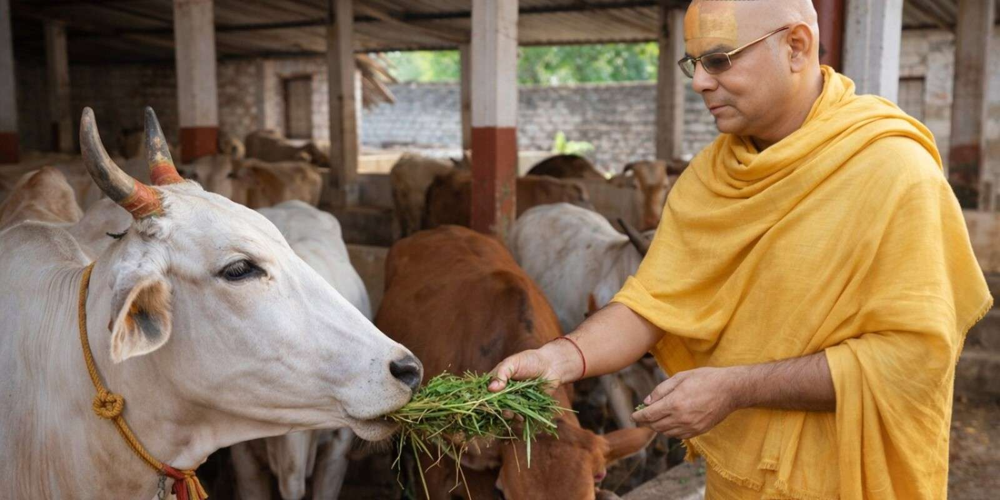

Cow protection and Gaushala Seva form an essential part of the Ashram's mission. The organization promotes traditional values of cow care and preservation as described in Sanatan scriptures. The cow holds a revered place in Hindu tradition, symbolizing purity, nourishment, and divine grace.
Providing shelter, care, and protection to cows following traditional Vedic principles
Ensuring quality nutrition and natural fodder for the well-being of our cows
Regular health checkups and veterinary care to maintain the health of our cattle
Devotees can participate in cow service as part of their spiritual practice
In Sanatan Dharma, the cow is revered as Gau Mata - the sacred mother who nourishes all
Serving and protecting cows is considered one of the highest forms of dharmic service
Cow products like milk, ghee, and organic manure are used in traditional ceremonies
Maintaining the ancient tradition of cow protection for future generations
Promoting eco-friendly and sustainable agricultural practices
Teaching values of kindness and care for all living beings

Our revered Mahanth Swami Shri Avdheshkumar Das Ji Maharaj personally oversees the care and protection of our sacred cows. His dedication to Gau Seva exemplifies the importance of cow protection in Sanatan Dharma.
Our Gaushala welcomes support from devotees who wish to participate in this sacred service. You can contribute through:
Support our cows by donating fodder and nutritious feed
Contribute to the maintenance and care of our Gaushala
Participate in daily care and Gau Seva activities
Join us in this sacred service of cow protection and preservation of Dharmic values